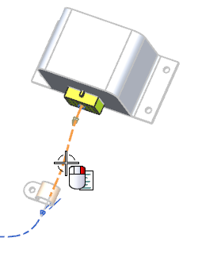
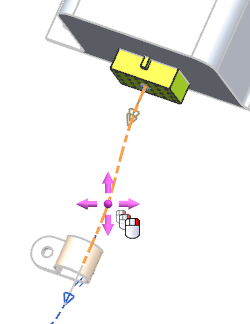
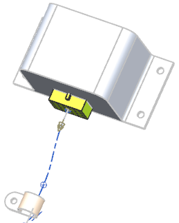

Subdivide a segment
Next you will branch a heal path from the first segment you created between the processor and the first clamp over to the controller.

To do that, you must first subdivide the segment where you want the heal path to branch from. The heal path requires an existing point as a start point. You cannot use Point on Curve with a heal path.
-
Right-click the segment between the processor and the clamp and choose Subdivide Segment.

You want to divide this routing at a point just to the right of the clamp.
-
Drag the new RCP near the clamp.

-
点击确定。
